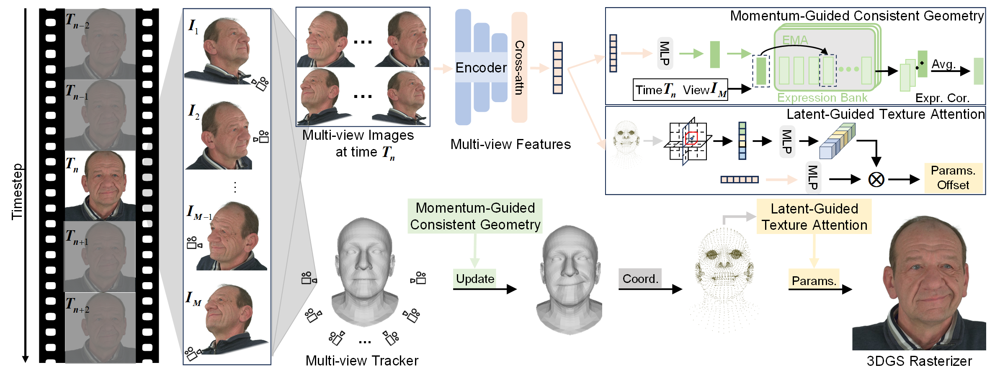

Accepted by PRCV · arXiv
Two-stage Gaussian avatar pipelines start from a tracked FLAME mesh and then freeze that geometry while optimizing appearance. Geometric misalignment therefore suppresses fine facial detail, expression changes are hard to keep consistent across views, and texture becomes over-smoothed. MoGaFace instead refines geometry and texture together during Gaussian rendering.

Momentum-Guided Consistent Geometry maintains an expression bank with momentum updates to correct mesh-image misalignment as expressions change. Latent-Guided Texture Attention compresses multi-view appearance cues into a head-aware latent code and restores high-frequency texture. The refined geometry and texture are written back into Gaussian attributes for more consistent novel-view synthesis and reenactment.